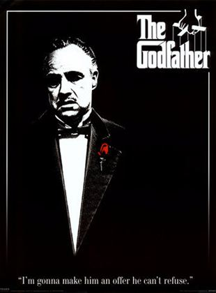

 |
Baba
Baba, 40’lar ve 50’lerin Amerika’sında, bir İtalyan
mafya ailesinin destansı öyküsünü konu alıyor. Don
Corleone’nin kızı Connie’nin düğününde, ailenin en küçük
oğlu ve bir savaş gazisi olan Michael babasıyla barışır.
Bir suikast girişimi, Don’u artık işleri yönetemeyecek
duruma düşürünce, ailenin başına Michael ve ağabeyi
Sonny geçer. Danışmanları Tom Hagen’in de yardımlarıyla
diğer ailelere savaş açan Corleone ailesi, eski moda
yöntemleri de değiştirmeye başlar.
Mario Puzo’nun çok satan kitabından Puzo ve yönetmen
Francis Ford Coppola tarafından sinemaya uyarlanan film
o yıl En İyi Film, En İyi Erkek Oyuncu ve En İyi
Uyarlama Senaryo dallarında Oscar kazanmıştır. Yapılan
araştırmalar sonucu Türkiye'de en fazla izlenen ve
satılan film olma özelliği de taşır.
|